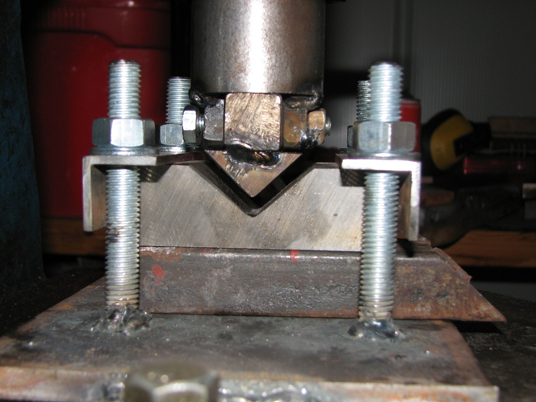

a pattern welded knife with a 3 1/2 inch blade
December 2009
For a long time, I wanted to make a blade with a chevron pattern both sides of the blade. In the end, I could only think of one way to achieve this, so here are some photos showing the process I used. If you can think of an easier way, please let me know!
The first step was to make a billet of 36 layers of 15n20 and EN42 spring steels:
The next stage was to deform the layers to get the right angle bend in the middle, so I made this tooling for my flypress:
Here is a close up of the dies. I have set the press so the billet will be squeezed until it is 1/4 inch thick
I had to get the billet to a high temperature to use this tooling, and it was important to keep the billet aligned correctly. Here is a picture of the 36 layer pattern welded angle iron:
I now wanted to increase the number of layers, so I cut the billet into 1 inch sections, and ground off the scale. I then welded them into stack. There are rods at the side, so the arc welding could be ground off easily and wouldn't affect the pattern. You can also see a piece of mild bar with a bevelled end at the top. This steel is intended to form the tang once the billet is forged out:
The next photo shows the billet after it has been welded and the scale ground off to check for flaws.
You can see the layers in the side of the billet. During the next stage, most of the hammer blows were directed at this face to flatten the billet and consequently make it longer and wider. The layers started 1 inch high and were about an 1/8th high when the blade profile had been forged. I forgot to take a photo after forging, but here is a picture after grinding and hardening:
Once the blade was polished and etched in ferric chloride, I made a bolster from black linen micarta, and fitted a handle made from palm wood with epoxy and a brass pin. The wood was very difficult to work, because the dark areas are very hard and the surrounding wood very soft. It can only be filed and sanded to shape, as the hard pieces can easily break away from the rest of the wood.
I would have preferred the layers to have a sharp 90 degree bend on the midline of the blade, but as you can see from the following pictures of the finished knife, they have more of a U shape than a V. However, I'm quite pleased with the way it has turned out.